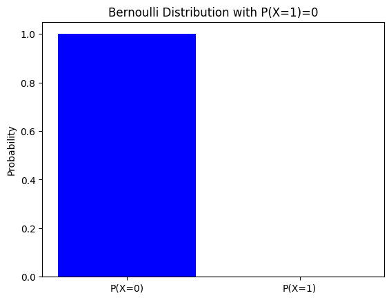
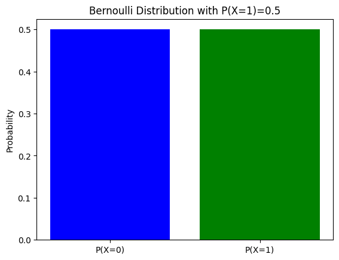
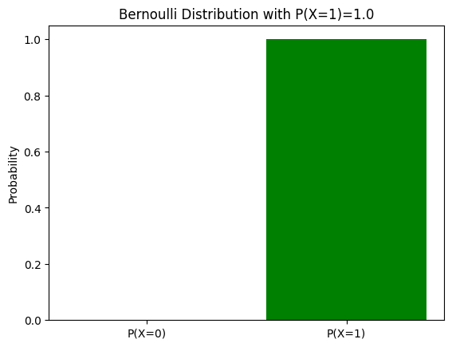
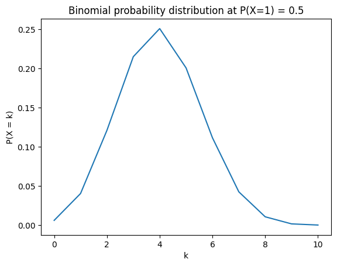
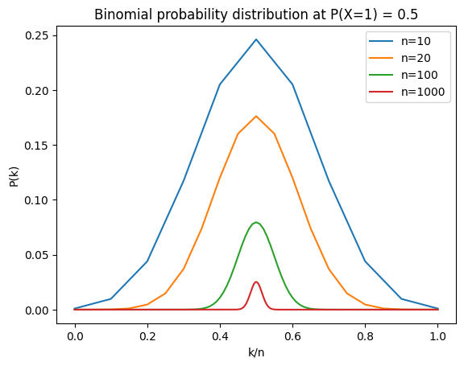
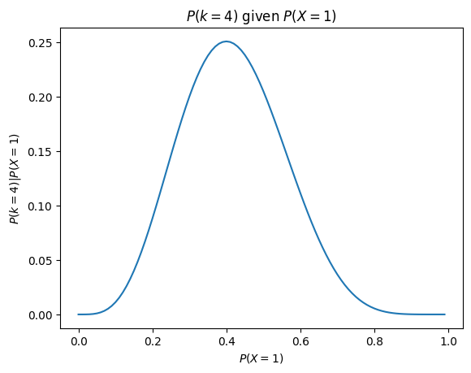
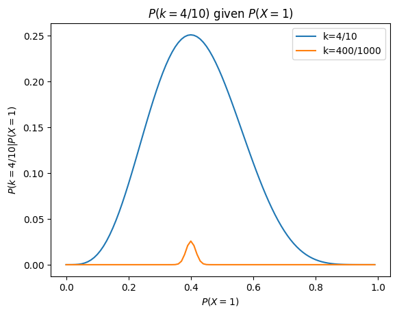

Probablities and probability distribution#
In the previous section, we mentioned a couple of terms and thought about how to answer a simple question based on some common-sense ideas. While this kind of worked and we were able to get a sense of whether our coin is biased, we couldn’t really know for sure if our reasoning made sense, and ultimately our answer was based on gut-feeling. We can rely on mathematics to get the best possible answer based on how confident we are that our coin isn’t biased based on the results of our experiment or put differently how probable is it that our coin isn’t biased, given the reuslts of our experiment?
The structure of this chapter will be slightly confusing, because we need several concepts that are necessary to answer our problem first but won’t seem particularly useful at first. After laying down some definitions, we will cover:
Probability distribution functions: functions that take in a particular outcome of an experiment and return their probability
The Bernoulli distribution: a probability distribution characterizing experiments with binary outcomes (pass or fail), such as a coin toss where we get either head or tail
The binomial distribution: a probability distribution characterizing experiments consisting of a series of experiments with binary outcomes, such as tossing a coin many time in a row
The likelihood function: another probability distribution that tells us what the likelihood of getting \(k\) heads out of \(n\) throws, given the probability of getting head on each throw
Once we have mastered all these concepts, we will be ready to obtain what we are after: how probably it is that our coin is not biased, given the results of our experiment.
Definitions and properties:#
Everything we have seen in the previous chapter can be re-expressed in mathematical terms, which will then enable us to get a principle answer to our question (rather than relying on gut feeling). For that, we need to lay out a few definitions from probability theory.
Sample spaces#
When we throw a coin one time, we have two possible outcomes. In comparison, when we threw the coin multiple times in a row in the previous chapter, we have many possible outcomes (for example, if we throw the coin twice, we can have [Head, Head] or [Tail, Tail], but also [Tail, Head], and so on). The set of all possible outcomes of an experiment is called the sample space and is formally defined as:
Important
Definition 1: Sample Space) A sample space, denoted \(\Omega\), is the set of all possible outcomes for a random experiment.
Events#
When we run an experiment, we obtain one of all the possible outcomes within our sample space. For example, when we throw the coin once, we might get head or tail. And when we throw the coin multiple times in a row, we might obtain [Head, Head], or [Head, Tail] and so on. We call these outcomes events, which are formally defined as:
Important
Definition 2: Event An event is any subset of the sample space, \(E \subseteq \Omega \), describing the outcome we care about.
Importantly, events are not limited to being only one possible outcome of an experiment, an event can also be a group of possible outcomes (which is still a subset of \(\Omega\)). For example, when we toss the coin twice, an event can be defined as “Getting head once”, which can occur for two different outcomes ([Head, Tail], [Tail, Head]).
Probability#
Within a given experiment, different events have a given probability of occuring on each experiment. For example, when we throw the coin one, if the coin is fair, we have 1 in 2 chances of getting head (and tail). A probability is defined formally as:
Important
Definition 3: Probability Probability is a (real-valued) set function that assigns to each event \(E\) in the sample space \(\Omega\) a number \(P(A)\), called the probability of the event, and it is calculatd like so: $\(P(A) = \frac{|A|}{|\Omega|}\)\( Where \)|A|\( is the number of outcomes that belong to \)A\( and \)|\Omega|$ is the number of possible outcomes
This definition probably need a bit of unpacking. First, about the \(|\) symbol in the equation. Taking the example of tossing the coin once, the sample space \(\Omega=[Head, Tail]\). The \(|\) symbol indicate that we take the number of elements in teh sample space \(\Omega\). So since \(\Omega=[Head, Tail]\), \(|\Omega|=2\). The same apply for \(|A|\). \(A\) on its own is an event, and in order to calculate its probability, we need to know the number of outcomes that belong to it, not what the event contains.
Another thing that might be a bit confusing is the statement that a probability “is a set function”. It just means that a probability is a rule whose inputs are sets of outcomes (the events) and whose output is a single real number between 0 and 1. Because every event is itself a subset of the sample space, calling \(P\) a set function simply reminds us that probability is defined on sets: for each event \(E \subseteq \Omega\) the function \(P\) assigns a number \(P(E)\).
Mini recap#
Just to recap in simple terms, when we throw the coin once, the sample space is [Head, Tail], and we have only two possible outcomes when we throw the coin once, head or tail, and we can define an event as “Getting head”, and another event as “Getting tail”. Note that we can also define an event “Getting head or Getting tail”, in which case our event covers the entirety of the sample space. That’s still okay because \(E \subseteq \Omega \), the subset symbol has the equal bit, which means having an event being the entire sample space is okay.
In comparison, when we throw the coin multiple times (say twice for the sake of the example), our sample size is larger. Here are all the possible outcomes:
[Head, Head]
[Head, Tail]
[Tail, Tail]
[Tail, Head]
So here we have \(|\Omega|=4\). Try to do it with 3 tosses, you will see that you have a much larger sample size. For such an experiment, we can define an event as “Getting twice head in a row” ([Head, Head]). This would be a single point event, there is only one option among our sample space that yields twice head. In contrast, we could define our event as “Getting head only half the time”, which means getting only once head. This events encapsulates two different outcomes from the sample space ([Head, Tail] and [Tail, Head]). Alternatively, we can define an event as “Getting at least 1 head”, in which case our event is composed of three outcomes ([Head, Head], [Head, Tail] and [Tail, Head]). Again, we can define our event however we please, just depends on what we are interested in.
Probability axioms#
There are a few properties probabilities must follow to count as probabilities. These properties we call axioms and these were defined by a Kolmogorov in 1933. We will lay the mathematical formulae first but explain it clearly down below:
Important
Definition 3: Probability Probability is a (real-valued) set function that assigns to each event \(E\) in the sample space \(\Omega\) a number \(P(A)\), called the probability of the event, and it is calculatd like so: $\(P(A) = \frac{|A|}{|\Omega|}\)\( Where \)|A|\( is the number of outcomes that belong to \)A\( and \)|\Omega|$ is the number of possible outcomes
To discuss whether a coin is fair we first need a bit of vocabulary and some conventional mathematical symbols.
Probability. The probability of an event \(A\) is written \(P(A)\). The probability of event \(A\) among the sample space \(|\Omega|\) is equal to:
Sample space \(\Omega\). This is the set of all possible outcomes. For a single coin toss, we have two possible outcomes: head or tail, so \(\Omega=2\). But if we wanted to know the probability of pulling a specific card out of a 52 cards’ deck, \(\Omega=52\).
Event. A subset of the sample space describing the outcome we care about. For a coin toss, we most often care about events heads or tail, so we have two single-point event. But say we want to know the probability of pulling an ace of spade, or a king of heart, the event we are interested in has two points. This is why in the \(P(A)\) formulae, we write \(|A|\). \(|A|\) is the number of outcomes that belong to \(A\)!
We have two important properties that a probability must fullfil:
\(0\le P(A)\le1\) for every event \(A\). That is because either an event never occurs or it always occurs, there are no other options.
The total probability satisfies \(\sum_{\omega\in\Omega}P({\omega})=1\). This means that when we sum all possible events together, we must arrive to exactly 1. This makes sense: when we throw a coin, something will always happen, either it lands on head or on tail. In our coin example, if the probability of getting a head and the probability of getting a tail wouldn’t sum up to 1, that would mean that sometimes when we throw the coin, it doesn’t land, which is not possible except if you play in space.
And these two properties have quite handy implications in our particular problem. Since we have only two possible outcomes and that they together must sum to 1, we have:
Which implies that:
So this means that if we know the probability of one event, we know the probability of the other.
A fair coin in mathematical terms:#
So with this simple terminology, we can clearly define what it means to have a fair coin. It means that:
And
In other words, having a fair coin means that:
which means that we have equal probability of landing on head or tail. But remember, we know that:
So if we know \(P(Head)\), we also know \(P(Tail)\). So if we want to know if our coin is fair, we don’t need to figure out \(P(Head)\) and \(P(Tail)\), only \(P(Head)\).
Note that I am writing Head and Tail directly in the equations. I’m just doing so to illustrate the concept simply, but in probability theory, we would instead replace each event by a number. We can simply define:
Head is 1
Tail is 0
In probability theory, we would typically write the probability of each event like so:
\(P(X=1)\): probability of getting head (or often referred to as success)
\(P(X=0)\): probability of getting tail (or often referred to as failure)
The \(X\) inside the paranthesis symbolizes that we are dealing with a random variable, that can take any possible value in our sample space, and the whole reads ‘The probability that the random variable \(X\) takes the value \(x\)’. It’s important to not get confused: this notation is not only used when dealing with coin tosses but with any random variable. In our example with picking cards from a deck, we would can also write \(P(X=3)\), where 3 could be a king of heart for example. When reading equations with \(P(X=something)\), it’s important to know the context to not get confused.
Probability distribution#
Using numbers instead of arbitrary names also enables us to express the probability of any possible outcome of an experiment as a mathematical function. Such functions are called
Probability distributions: a function that assigns a probability to each possible outcome in a sample space. It describes how probabilities are distributed over the set of possible outcomes, ensuring that all probabilities are non-negative and that their total sums to one.
Because our coin toss is a random process that can yield one of two possible outcome, we can write a function that takes in each possible outcome (head or tail) and return it’s probability. Similarly, when picking a card within a deck, we can write a function that takes in the value associated with each card and returns its probability. Both these functions are probability distribution for these two different random processes.
All of this might seem a bit convoluted and uncessary. It’s important to understand that what we’ve done is simply a translation: what we wrote with words in the previous chapter we are now writing into mathematical terms, using some formalism and conventions, nothing more. It might seeem like we are overcomplicating things: we have only two outcomes, one probability each, is writing a function for that more necessary? And more importantly, how does that help us figuring out if our coin is biased or not? The answer is that in order to figure out the most probable values for \(P(X=1)\), we need to express all parts of our experiments as mathematical formulae, so that we are ultimately able to calculate what is the most probable value for \(P(X=1)\) given the result of our experiment. So hang in there, it will soon make sense!
The Bernoulli distribution: a single formulae to express the probability of each event#
A probability distribution function must take in any possible event of the sample space and return its probability. So in our simple coin toss example, we have two possible outcome: 1 (head, or more generally referred to as success) and 0 (tail, or more generally failure). More mathematically, we need a function that returns \(P(X=1)\) when we give it 1, and \(P(X=0)\) if we give it 0.
This function is called the Bernoulli distribution, and is written like so:
If we know the probability of getting head, this function gives us the probality associated with each event (head and tail), nothing more.
Note
Notation clarification: We have written the formulae for the Bernoulli distribution using the notation that is traditional in probability theory. This is just a convention. We can write the same function using convention from traditional algebra:
Where \(p = P(X-1)\). This is exactly the same thing just using conventions from different subfields in mathematics, don’t get confused.
It’s easy to see that this function behaves as we want it to:
And
Note that this is only one of the many functions that returns the probability associated with each event, there are many other functions one could come up with that would do the same. It is just a particularly simple and compact one, which is why it is used across the board. We can write the Bernoulli distribution using some simple python code and try a couple different values of \(p\):
import matplotlib.pyplot as plt
ps = [0, 0.5, 1.0] # Showing the probability of P(X=0) and P(X=1) at various values of P(X=1)
P = {}
for p in ps:
q = 1 - p # the probability of failure is 1 - the probability of success
P["X=0"] = p**0*q**1 # P(X=0) = P(x=1)^0 * P(X=0)^(1-0)
P["X=1"] = p**1*q**0 # P(X=0) = P(x=1)^0 * P(X=0)^(1-0)
plt.bar(["P(X=0)", "P(X=1)"], [P["X=0"], P["X=1"]], color=['blue', 'green'])
plt.title(f'Bernoulli Distribution with P(X=1)={p}')
plt.ylabel('Probability')
plt.show()



The Binomial distribution: a probability distribution for the number of success#
The Bernoulli distribution can be used to calculate the probability of getting head or tail (\(P(X=1)\) and \(P(X=0)\) respectively) when we throw the coin once, but again, we need to know hte probability of getting head to start with, so it does not enable us to solve our problem. In the previous chapter, we had the intuition that in order to figure out \(P(X=1)\), we can try to throw the coin many many times, and that the number of head we get out of the total number of throw should give us some information about what \(P(X=1)\).
When we are throwing the coin once, we are dealing with probability: the occurence of one of the two events out of the sample space has a given probability of occuring, and we can use a probability distribution to ascribe the probability to each event. Importantly, when we are throwing the coin multiple time, we are also dealing with probability: we have a set of events which combined constitute the sample space, and each event has a given probability of occuring. And we can also write a probability distribution function to ascribe a probability to each possible outcome.
However, when we throw the coin multiple time, things get more complicated, and the Bernoulli distribution is insufficient to ascribe probability of each event. It is easy to understand why. When we throw the coin multiple times, we don’t have two possible events anymore, and our sample space is therefore not two anymore. Say we throw the coin 2 times, here are all the possible outcomes:
[head, head]
[tail, tail]
[head, tail]
[tail, head]
So we have 4 different outcomes. But now say we throw the coin 3 times:
[head, head, head]
[head, head, tail]
[head, tail, tail]
[tail, head, tail]
[tail tail, tail]
…
There are many more possible outcomes when we throw the coin several times, and the more times we throw the coin, the more the number of possible outcomes increases!
But what’s perhaps more interesting is that for such a random system, there are many different things we can define as an event. We could decide that we are interested in knowing the probability of obtaining a specific sequence of head and tails out of the number of tosses, such as the probability of getting [head, head, tail] in exactly that order. Alternatively we could also be interested in know what is the probability of getting twice head out of 3 tosses. We see above that we have at least 2 possible outcomes in which we get twice tail ([head, tail, tail] and [tail, head, tail]) and perhaps even more. Depending on how we define an event (what we are interested in knowing the proba)
Note
Notation clarification: Remember that an event is defined as “A subset of the sample space describing the outcome we care about”. It does not have to be just one specific outcome. This is why in the formulae:
We write \(|A|\) and not just \(A\). When we throw the coin multiple times, we can be interested in knowing the probability of getting a particular sequence of head and tail, or in the probability of getting a particular number of head in a given number of throws. But we could also be interested in the probability of getting more than one head, less than two tails. Importantly, different events definition require different probability distribution functions. $$
Whatever the definition of our event is, we can come up with a probability definition function that will ascribe a probability to each event, but it will be a different function for each event definition. In the previous chapter, we had the intuition that calculating the number of heads (which we will call \(k\)) out of the total number of throws (which we will call \(n\)) should be informative about \(P(X=1)\). So this is how we should define our event: getting \(k\) heads out of \(n\) tosses, the order of head and tails is irrelevant.
So we need to figure out a probability distribution function that takes in a particular number of successes \(k\) (given a number of throws) and returns the probability of that. And as you will see, we can in fact come up with it ourselves.
Multiple tosses as a series of Bernoulli trials#
When we throw the coin multiple time, the probability of each toss on their own is still characterized by the Bernoulli distribution. Accordingly, when we toss the coin multiple time, the probability of getting one particular outcome is obtained by multiplying the probability on each trial together. Say we want to know the probability of getting head, then tail, then tail again, we have something like this:
Note
Notation clarification: The formulae above are a bit confusing: on the left side of the equation, the \(X\) in \(P(X=[1, 0, 0])\) refers to the results of multiple tosses (so a random varialbe that has one value for each toss), but on the right side, the \(X\) in \(P(X=1)\) refers to the outcome of each coin toss. This is very confusing and makes for very inelegant formulae. To simplify things, we will say from here on out that \(P(X=1) = p\), so \(p\) is the probability of getting head.
Now, say we do 4 throws, and we want to know the probability of getting twice head and then twice tail in that specific order:
And let’s say we want to know the probability of getting twice tail and twice head (so same as before, just reverse the order):
From these simple examples, we can notice a few things:
Sequences with the same number of heads and tails have the same probability regardless of their order of occurence. In other words, \(P(X=[0, 0, 1, 1]) = P(X=[1, 1, 0, 0])\)
A pattern seem to emerge: the exponents of each \(p\) and \((1-p)\) are just the number of success and failures each
So now, let’s try to come up with something more general that would give us the probability of getting \(k\) successes out of \(n\) tosses, which we logically write \(P(X=k)\):
This formulae is however incomplete. Remember when we said above that we can define an event as getting a specific sequence as opposed to getting \(k\) out of \(n\) successes? Well the formulae above is the probability distribution for the former and not the latter. In other words, the probability of getting [0, 0, 1, 1] and [1, 1, 0, 0] have the same probability:
In order to get the probability of getting \(k\) out of \(n\) success, we need to combine the probability of all outcomes in which there are \(k\) successes, which requires multiplying the property of each of these outcomes together. So say we want to know \(P(X=2)\) when \(n=2\), we have:
So in order to find \(P(X=k)\), we need to know all the possible combinations that yield \(k\) heads in our sample space. Thankfully, there is an easy formulae to do that:
Which reads n takes k, which is called the binomial coefficient. So if our case, when we want to figure out how many sequences we have that yield 2 heads out of 4 throws:
Which is 6. Accordingly:
So more generally, we have:
This formulae is called the binomial distribution. It is important to understand what this forumlae tells us: provided that we know the probability of success on a given try \(P(X=1)\) or \(p\) (which in our particular case translates to the probability of the coin landing on head when we throw it once), we can know the probability of getting \(k\) head out of \(n\) coin tosses! So once again, this formulae does not tell us what \(P(X=1)\) is! However, as we will see below, this formulae is required to make a guess about what \(P(X=1)\) might be based on our experiment.
Relating the binomial distribution to our intuition#
It is also a formal mathematical description of what happens when we throw the coin multiple times, and it can be useful to prove some of the intuitions we had before. For that, we will write a little python function implementing the binomial distribution, thereby illustrating that is nothing terribly complicated!
import math
def binomial_distribution(n, k, p):
'''
Calculate the binomial probability P(X = k) for n trials, k successes, and success probability p.
P(X = k) = \binom{n}{k} p^k (1 - p)^{n - k}
:param n: Total number of trials
:param k: Number of successes
:param p: Probability of success on a single trial
:return: Binomial probability P(X = k)
'''
# Calculate the binomial coefficient (n choose k)
binom_coeff = math.comb(n, k) # Calculate n choose k: \binom{n}{k}
# Calculate the binomial probability using the formula
probability = binom_coeff * (p ** k) * ((1 - p) ** (n - k))
return probability
With that simple function, we can obtain the probability for each value of y, while modulating the number of toss we make as well as \(P(X=1)\). In the previous chapter, we had the intuition that if the coin coin isn’t biased, then we should be observe head on half of our tosses. Pushing this intuition a bit further, it seems logical that the number of heads \(k\) divided by the number of tosses \(n\) should be equal to \(P(X=1)\). In other words, if the probability of the coin landing on head is of 0.4, we expect to get 4 head out of 10 tosses. So if we plug in 0.5 and 10 in the formulae above, \(P(X=5)\) should be higher than any other event:
n_throw = 10 # Number of throw
theta = 0.4 # Probability of obtaining head
n_head = range(n_throw+1) # We want to know the probability of getting 0 heads, 2 heads... up to a 1000 heads out of our 1000 throws
distribution = [binomial_distribution(n_throw,k, theta) for k in n_head]
fig, ax = plt.subplots()
ax.plot([k for k in list(n_head)], distribution)
ax.set_xlabel("k")
ax.set_ylabel("P(X = k)")
ax.set_title("Binomial probability distribution at P(X=1) = 0.5")
plt.show()

Just as expected. But also, none of the other events have a probability of 0, just some are more likely than others. The most extreme outcomes (0 heads or 10 heads) have the lowest probability, but it’s still not 0:
print(f"P(k=0) = {binomial_distribution(n_throw, 0, theta)}")
print(f"P(k=10) = {binomial_distribution(n_throw, 10, theta)}")
P(k=0) = 0.006046617599999997
P(k=10) = 0.00010485760000000006
In addition, we had the intuition in the previous chapter that if we throw the coin more times, we should have a more reliable estimate of what \(P(X=1)\) is. When we translate this assumption in more mathematical terms, what we would expect is that as we increase \(n\), the probability of values far away from \(P(X=1)\) should decrease. This can also be illustrated nicely with the binomial formulae: we can compare the probability of each \(k\) successes relative to the number of throws, while keeping \(P(X=1)\) fixed at 0.5:
theta = 0.5 # Probability of obtaining head
# Prepare figure:
fig, ax = plt.subplots()
# 10 tosses:
n_throw = 10 # Number of throw
distribution_10_throw = [binomial_distribution(n_throw,k, theta) for k in range(n_throw+1)]
ax.plot([k/n_throw for k in list(range(n_throw+1))], distribution_10_throw, label=f"n={n_throw}")
# 20 tosses:
n_throw = 20 # Number of throw
distribution_10_throw = [binomial_distribution(n_throw,k, theta) for k in range(n_throw+1)]
ax.plot([k/n_throw for k in list(range(n_throw+1))], distribution_10_throw, label=f"n={n_throw}")
# 100 tosses:
n_throw = 100 # Number of throw
distribution_10_throw = [binomial_distribution(n_throw,k, theta) for k in range(n_throw+1)]
ax.plot([k/n_throw for k in list(range(n_throw+1))], distribution_10_throw, label=f"n={n_throw}")
# 1000 tosses:
n_throw = 1000 # Number of throw
distribution_10_throw = [binomial_distribution(n_throw,k, theta) for k in range(n_throw+1)]
ax.plot([k/n_throw for k in list(range(n_throw+1))], distribution_10_throw, label=f"n={n_throw}")
ax.set_xlabel("k/n")
ax.set_ylabel("P(k)")
ax.set_title("Binomial probability distribution at P(X=1) = 0.5")
plt.legend()
plt.show()
plt.close()

As expected, the probability of \(k/n\) for values far away from \(0.5\) decreases as we increase \(n\). Indeed, \(P(k/n=0.8)\) is largest when \(n=10\) and smallest when \(n=1000\). Something less intuitive is that for any values of \(k/n\), \(P(X=k)\) is lower when we perform more tosses. That is also logical. When we throw the coin a 1000 times, we have a probability for any values between 0 and a 1000, while when we do 10 throws, we have only a value for \(k=1\) to \(k=10\). And because the probability distribution must sum up to 1, it would make sense that the probability of any event is lower when we throw the coin many times. Another way to put it is that when we throw the coin a 1000 times, there are many more possible outcomes (anything from 0 to 1000), so the probability of getting any single value is overall lower compared to when we do only 10 tosses.
The likelihood function: \(P(k|P(X=1))\)#
With the binomial distribution, we can know, given \(P(X=1)\) and the number of tosses we make, what the probability of getting any numbers of heads ranging from 0 to the number of tosses we make. But when we run our experiment, we don’t know the true value of \(P(X=1)\), this is what we are looking for. We can, however, compute something else based on the result of our experiment. With the number of heads you’ve obtained, you can calculate how likely it is to have obtained that value based on any possible value of \(P(X=1)\). In other word, say you have obtained 5 heads out of 10 throws. You can calculate how likely it is to obtain such a value for different values of \(P(X=1)\). The way you do it is simple: you take the binomial distribution function, keep \(k\) the same, but change \(P(X=1)\) each time, like so:
and so on. We can illustrate this with code very easily to get a graphical intuition (say we throw the coin 10 times and get head 4 times):
import numpy as np
thetas = np.arange(0, 1, 0.01) # Trying differenet probability of obtaining head
n_throw = 10 # 10 tosses
k_success = 4 # 4 successes
# Prepare figure:
fig, ax = plt.subplots()
k_likelihood = [binomial_distribution(n_throw, k_success, theta) for theta in thetas]
ax.plot(thetas, k_likelihood)
ax.set_xlabel("$P(X=1)$")
ax.set_ylabel("$P(k=4)|P(X=1)$")
ax.set_title("$P(k=4)$ given $P(X=1)$")
plt.show()
plt.close()

It is crucial to understand what this graph represents. The x axis represents different values for \(P(X=1)\), and the y axis represents the probability of observing 4 out of 10 heads (i.e. \(P(k=4)\)) for each of these values of \(P(X=1)\). Unsurprisingly perhaps, we are most likely to observe 4 heads out of 10 throws if the true value of \(P(X=1)\) is 0.4.
Our intuition that increasing the number of tosses gives us a more reliable estimate of the true value of \(P(X=1)\) can also be seen here. We can compare the probability of observing 4/10 heads against the probability of observing 400/1000 tosses for different values of \(P(X=1)\):
thetas = np.arange(0, 1, 0.01) # Trying differenet probability of obtaining head
# Prepare figure:
fig, ax = plt.subplots()
k_likelihood_10 = [binomial_distribution(10, 4, theta) for theta in thetas]
ax.plot(thetas, k_likelihood_10, label="k=4/10")
k_likelihood_1000 = [binomial_distribution(1000, 400, theta) for theta in thetas]
ax.plot(thetas, k_likelihood_1000, label="k=400/1000")
ax.set_xlabel("$P(X=1)$")
ax.set_ylabel("$P(k=4/10|P(X=1)$")
ax.set_title("$P(k=4/10)$ given $P(X=1)$")
plt.legend()
plt.show()
plt.close()

When we throw the coin a 1000 times, many more values of \(P(X=1)\) are very unlikely, which means that uncertainty regarding the true value of \(P(X=1)\) is reduced.
What we are calculating when checking the probability of \(k\) given each value of \(P(X=1)\) so is the likelihood of a value of \(k\), given any possible value of \(P(X=1)\), which is written like so:
The vertical bar means given. Once again, this is a probability which is characterize by a particular function which attributes a probability to each event in our sample space. In this case, an event is a value of \(k\) given a value of \(P(X=1)\), and the sample space is each possible pairing between our value \(k\) and the possible values of \(P(X=1)\). And once again, this can be characterized by a probability distribution function. The type of function that provides the likelihood of an observation, given the value of a parameter of interest (in our case \(P(X=1)\)) are referred to as likelihood functions. It is important to understand that a likelyhood function is not a specific function, but rather a type of function that yields the probability of an observation given each possible value of the parameter of interest, in our case \(P(X=1)\). For our specific problem, we have a specific function (as we will see shortly something related to the Binomial distribution but not quite, I’ve just used it so far to keep things simple), but for another kind of random process, we will have a different likelihood function.
The likelyhood function may sound at first like it is answering our question. But in fact, it is the mirror image of what we want to know. What we want to know is what is the most probable value of \(P(X=1)\), given the number of success we have observed. To know which is the most probable values, we need to know the probability of each \(P(X=1)\) value given our results to find the highest one. So what we need to know is the probability of each \(P(X=1)\), given our results, which we can write as:
But the likelihood function enables us to calculate the opposite: the probability of \(k\), given \(P(X=1)\) or \(P(k|P(X=1))\). These two quantities are intimately related; if we find that our observed data is highly unlikely under \(P(X=1)=0.5\) but much more likely under \(P(X=1)=0.1\), this suggests that our hypothesis that \(P(X=1)=0.5\) (i.e., that the coin is fair) might be incorrect. In other words, our confidence in whether the coin is biased depends on how probable our data is under the assumed value of \(P(X=1)\). But this is not the quantity that we are interested in. We can illustrate the difference between the two with the same example as before. Say you want to know if it is raining outside, you look out the sky and see that it is cloudy. What you want to know is \(P(P(X=Rain)|y)\) (where y is ‘is cloudy’). This not the same as \(P(y|P(X=Rain))\). The probability of the sky being cloudy when it rains is pretty high, but the probability of rain when the sky is cloudy is not quite as high.
So finally, in order to answer our question, we need to be able to go from \(P(k|P(X=1))\) to \(P(P(X=1)|k)\). This is what the Bayes Theorem enables, and this will be the focus of the next chapter